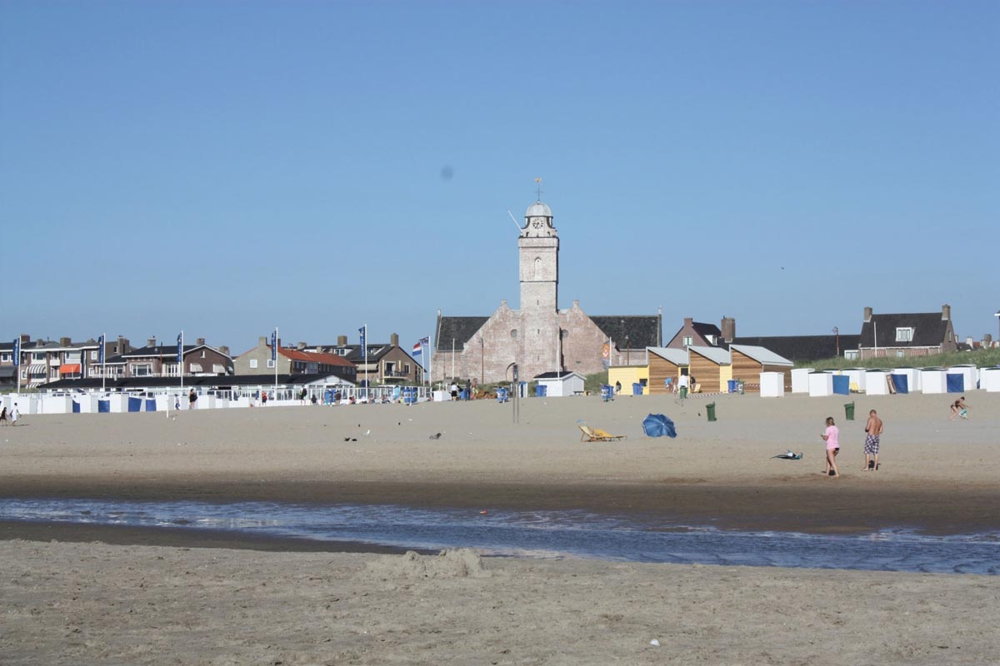
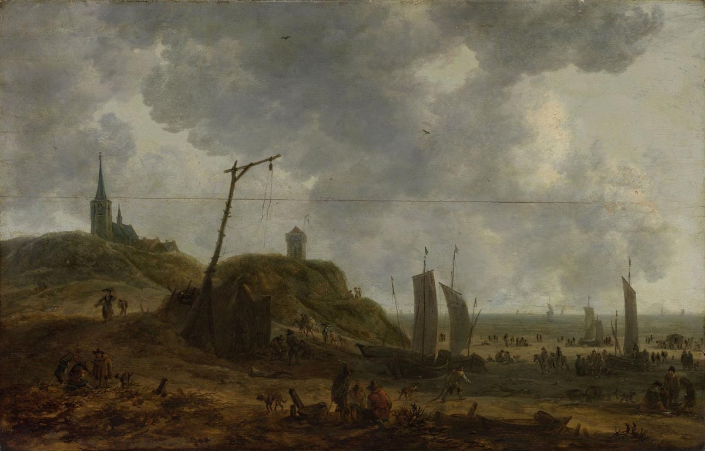

❯
❮
Ontdek dit tijdvak

Middeleeuwen
1200 - 1500
Late Middeleeuwen
1200 - 1500

Vroege Middeleeuwen
1200 - 1500
Moderne tijd
1200 - 1500
Romeinse tijd
1200 - 1500
Rennaissance
1200 - 1500
Industrialisatie
1200 - 1500
Moderne middelmatige
1200 - 1500